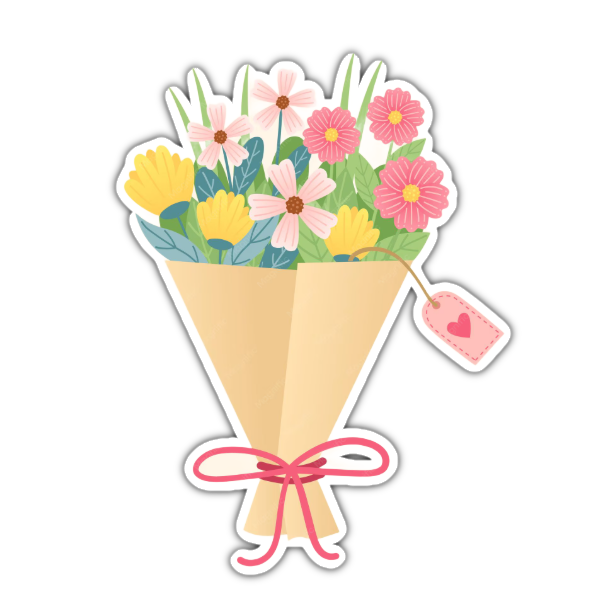

🫶 Hi Sheila 🫶
I made something for you.😅 It isn't anything expensive. SURPRISEEEE HAHAHAHAHAHA. 🤍
First of all, thank you for helping me create this website. You probably thought I was just busy working on a school project. Well... I wasn't. 😭 The truth is, this was the project. Every time I asked you about your favorites(and you wouldn't tell me) or little details, I was secretly building something for you. I wanted to confess in a way that felt different, something you could read, smile at, and remember. I could've simply sent you a message. But you deserve more than a few words on a screen. You deserve something made with time, effort, and genuine feelings. So every page you open carries a small piece of what I've been wanting to tell you.
I've Been Thinking...
wanting to tell you something for quite a while. I kept wondering if I should keep it to myself or finally be honest.(You Look Super Duper❗CUTE❗)👉👈 👇
Before anything else...🙈
I just wanted to say this took me way longer than I'd like to admit. I spent hours, then days, working on this little website. Not because the code was impossible, but because I kept rewriting everything. I probably spent more time deciding what to say than writing the actual code. Since you're in the IT department, I figured you'd understand. Sometimes the code is the easy part. The difficult part is figuring out what you really want to say, and hoping the person reading it understands what you mean. Somewhere between all of that, I realized something. I developed these feelings for you. I don't even know the exact moment it happened. It just happened so naturally that one day, I caught myself looking forward to talking to you more than I ever expected (but I'm too shy to even try and talk to you hehe). I almost didn't send this. I kept wondering if I should just leave it unfinished, like an abandoned project, or keep everything to myself. But I knew I'd always wonder "what if" if I never told you.🏹❤️
What I Like About You(uhmm... lahat po)✨
Your smile feels like a scene where everything slows down, like the world pauses just to look at you and nothing else matters for a moment.
Your eyes are the kind I could get lost in without meaning to, and somehow they always make my heart skip a beat.
You're so effortlessly cute that I catch myself smiling before I even notice it.
And maybe my favorite thing is your laugh, because every time I hear it, I can't help but smile too.
There is more to it than what words can hold, like no sentence fits everything felt, and even the best lines end up feeling incomplete when trying to explain it. 📖📸
But It's More Than That(ofcourse there's a lot more😊)
It wasn't just your appearance that caught my attention. It was the way our conversations started from replying to each other's Instagram stories and somehow turned into something I always looked forward to.📱
Even when we played Valorant together, and you had to put up with me even though I kind of suck at the game, you still made those moments fun.🎯
Through those conversations and games, I got to see a little more of the kind of person you are, and it made me want to know you even better. That's when I realized I had started developing feelings for you.💌
A Small Wish
If life allows it...
I'd love to spend some time with you.
Maybe coffee.🍵
Late night conversations.🌙
Random walks.👣
Trying new food.😋
Or simply enjoying each other's company.🤪
In All Honesty
I like you,
not because I expect you to feel the same,
but because keeping it to myself started to feel less honest than telling you.
If this confession ends up being just a memory,
I'll still be glad I found the courage to let you know that you are someone truly special to me. "
One Question...
Would you be open to letting me get to know you more, slowly and genuinely, and see where this could lead between us?
Thank you Sheila
Thank you for making it all the way here
YESSSSS!!!! SHE PRESSED YES!, I'm just kidding ofcourse hehe🐒(si bogart talaga yon)
thank you. More than anything, I appreciate that you took the time to read everything I wanted to say. That alone means a lot to me.
You don't have to decide anything right now. Take all the time you need, and never feel like you owe me an answer just because I confessed.
I genuinely hope life is kind to you. I hope you keep smiling, and keep laughing
Whatever your answer is, I'll respect it.
Thank you for reading everything. 👋😊 click here ------------➤
